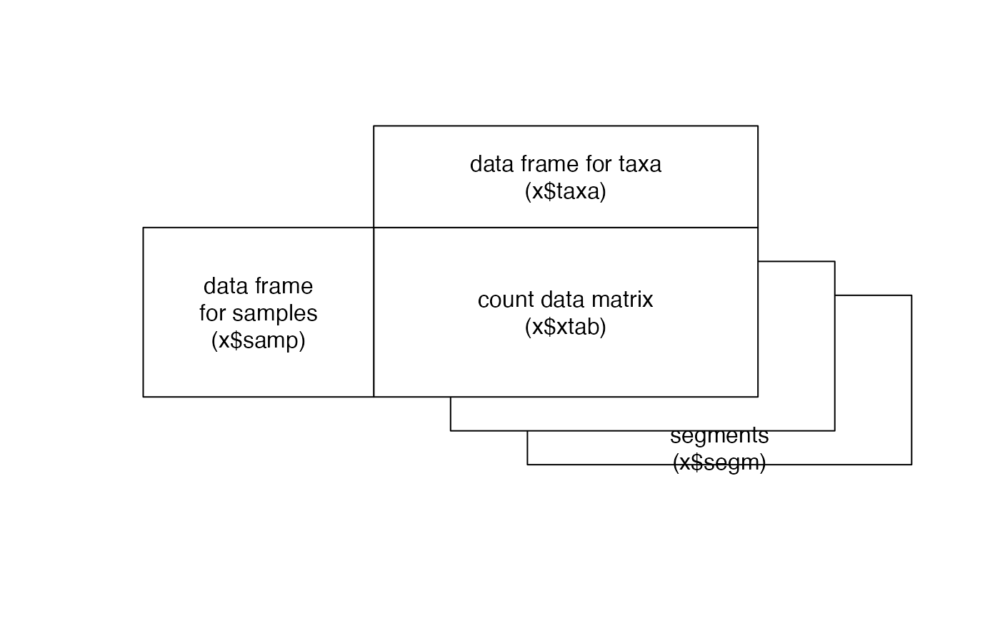
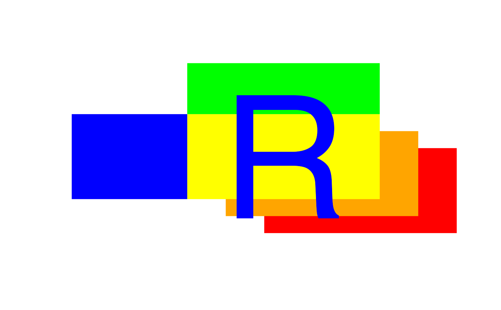

mefalogo.RdPlots a shematic representation of and object of class 'mefa', or alternatively plots a colored logo of the mefa package.
character, "cont" is for drawing only black contours, "fill" is for filled polygons.
character, "str" for labelling according to the general structure of a 'mefa' object, "r" places a big R letter in the middle (for logo).
numeric values to adjust the dimensions of the polygons.
a numeric value to rescale the dimensions of the polygons.
logical, if a new plot (TRUE) should be drawn, or just adding the polygons and labels to an existing one (FALSE).
numeric, argument for scaling the labels.
logical, annotations of the plot (see par).
logical, drawing axes or not (see par).
extreme values for the x and y axes.
other arguments passed to the function plot, see par. Only effective if new = TRUE.
This function was developed for depicting the general structure of the 'mefa' objects. The colored logo version can be used in presentations as well.
S\'olymos P. (2008) mefa: an R package for handling and reporting count data. Community Ecology 9, 125--127.
S\'olymos P. (2009) Processing ecological data in R with the mefa package. Journal of Statistical Software 29(8), 1--28. doi:10.18637/jss.v029.i08
mefalogo()

mefalogo("fill", "r")
